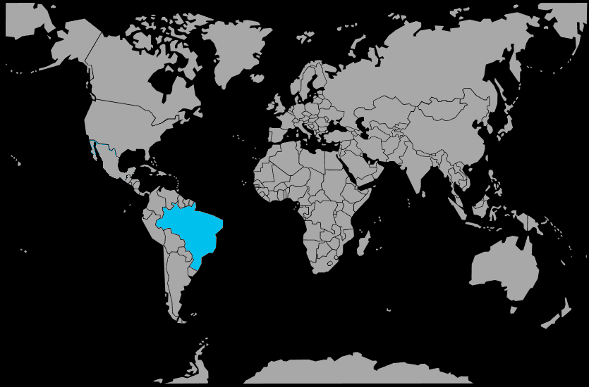

Systématique
- Ordre : Cichliformes
- Famille : Cichlidae
- Sous‑famille : Geophaginae
- Genre : Dicrossus
- Espèce : Dicrossus maculatus
Dicrossus maculatus est un cichlidé nain amazonien rare et délicat, au corps argenté orné de deux rangées de taches noires horizontales formant un motif géométrique caractéristique.
Les mâles atteignent environ 9 cm, les femelles 6 cm, avec des nageoires à reflets bleus et rouges chez le mâle et des pectorales jaunes éclatantes chez la femelle en reproduction.
L'espèce est généralement paisible mais timide, vivant en couple ou en petit groupe dans les zones peu profondes et ombragées riches en feuilles mortes et en plantes aquatiques.
En période de reproduction, les couples deviennent territoriaux et peuvent se montrer agressifs envers les congénères; un aquarium spacieux bien planté avec de nombreuses cachettes est indispensable.
Mode : pondeur sur substrat découvert; le couple nettoie une large feuille de plante ou une pierre plate, où la femelle dépose les œufs qu'elle ventile et protège.
L'éclosion intervient après environ 3 jours à 28 °C; la femelle déplace ensuite les larves dans une dépression creusée dans le sable, et les alevins atteignent la nage libre après 5 à 8 jours, pouvant alors être nourris avec des nauplies d'artémias.
Dimorphisme sexuel : marqué; les mâles sont nettement plus grands, avec des couleurs et des motifs plus intenses et des nageoires impaires bien développées, tandis que les femelles en reproduction arborent des pectorales jaunes éclatantes.
Espérance de vie : environ 5 ans en captivité, sous réserve de paramètres d'eau très spécifiques et stables.
Dicrossus maculatus fréquente les igarapés, bras morts de rivières et forêts inondées du bassin amazonien, où il évolue près du fond tapissé de feuilles mortes, entre les racines et les tiges de plantes émergées dans une eau très douce et acide.
Répartition
Origine naturelle :
- Bassin amazonien brésilien, états d'Amazonas et du Pará.
- Bas rio Tapajós et affluents (zone en aval de São Luís do Tapajós).
- Rio Maués et rio Trombetas dans le bassin amazonien central.
L'espèce est largement distribuée mais peu abondante dans les petits cours d'eau forestiers et zones inondées du bassin amazonien central brésilien, dans des eaux extrêmement douces et acides.
Paramètres de maintenance
Température : 22 à 29 °C, avec une température optimale autour de 25 à 28 °C.
pH : 4,0 à 6,5, eau très acide.
GH : 0 à 4 °dGH, eau ultra douce.
Courant : très faible, avec beaucoup de feuilles mortes, racines et plantes pour recréer l'ambiance tamisée des igarapés.
Volume conseillé : au minimum 100 à 140 L pour un couple, idéalement davantage pour un petit groupe.
Régime alimentaire
Régime : carnivore; il se nourrit de petits invertébrés aquatiques, larves de moustiques, artémias, daphnies et cyclops dans son milieu naturel.
En aquarium, il apprécie les nourritures vivantes et congelées de petite taille, avec une transition possible vers des flocons et granulés fins de qualité.
Une alimentation variée, distribuée en petites rations régulières, associée à une eau très douce et propre, est indispensable pour maintenir cette espèce délicate et favoriser la reproduction.